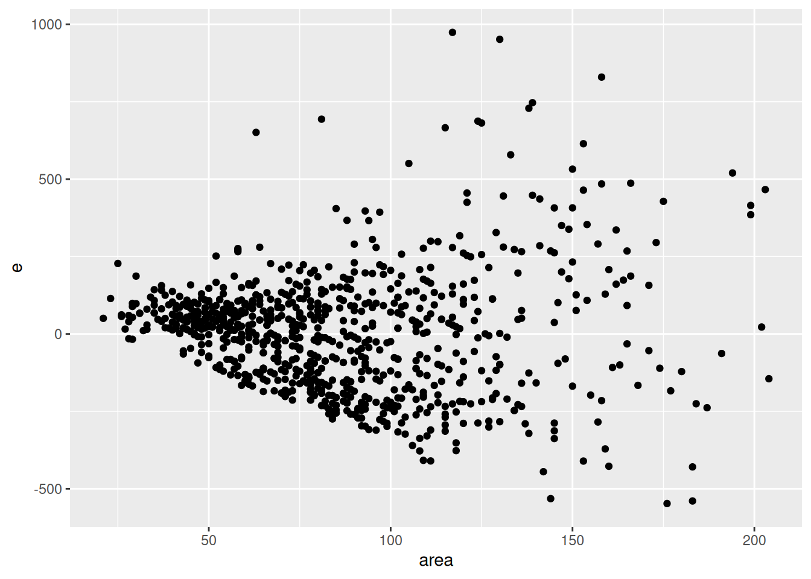

df <- read.csv("amsterdam-house-prices.csv")
cor(df$price, df$area)[1] 0.7352108
The dataset amsterdam-house-prices.csv contains information on the asking price of a random sample of houses for sale in Amsterdam in August 2021, as well as some basic information on the listings.
The definitions of all the variables are as follows:
price: The asking price in thousands of euros.area: The floor space in square meters (m^2).bedrooms: The number of bedrooms.neighborhood: Whether the listing was in the North, South, East, West, or Central neighborhood of Amsterdam.Use this dataset to answer the following questions.
What is the sample correlation between price and area?
Answer:
df <- read.csv("amsterdam-house-prices.csv")
cor(df$price, df$area)[1] 0.7352108Estimate a linear regression model with price as the dependent variable and area as the independent variable.
If you estimated the model correctly, you should have an estimated intercept of 23.3385.
Answer:
m1 <- lm(price ~ area, data = df)
summary(m1)
Call:
lm(formula = price ~ area, data = df)
Residuals:
Min 1Q Median 3Q Max
-547.71 -132.44 17.14 93.88 974.07
Coefficients:
Estimate Std. Error t value Pr(>|t|)
(Intercept) 23.3385 17.2882 1.35 0.177
area 5.9623 0.1876 31.79 <2e-16 ***
---
Signif. codes: 0 '***' 0.001 '**' 0.01 '*' 0.05 '.' 0.1 ' ' 1
Residual standard error: 190.1 on 859 degrees of freedom
Multiple R-squared: 0.5405, Adjusted R-squared: 0.54
F-statistic: 1011 on 1 and 859 DF, p-value: < 2.2e-16What is the sample regression slope?
Answer:
coef(m1)[2] area
5.962338 The slope is 5.9623.
According to the sample regression slope, a 1m^2 increase in the area of a house on average increases the listing price by how many euros?
Note: Pay attention to the units of the variables. Price is measured in thousands of euros. You will need to multiply by 1000 to report your answer in euros. Pay attention to the units in all questions that follow.
Answer:
The question is referring to a one-unit increase in area. However, price is measured in thousands of euros. Therefore we need to multiply the estimated slope by 1000 to get the answer:
coef(m1)[2] * 1000 area
5962.338 Plot the residuals (on the vertical axis) against area (on the horizontal axis). Choose the answer below which best describes what you see:
Based on this, which model assumption is likely violated?
Answer:
df$e <- m1$residuals
library(ggplot2)
ggplot(df, aes(area, e)) + geom_point()
The dispersion of the residuals increases as area increases. Therefore the homoskedasticity assumption is likely violated.
Estimate a linear regression model with price as the dependent variable and bedrooms as the independent variable.
If you estimated the model correctly, you should have an estimated intercept of 166.604.
m2 <- lm(price ~ bedrooms, data = df)
summary(m2)
Call:
lm(formula = price ~ bedrooms, data = df)
Residuals:
Min 1Q Median 3Q Max
-479.62 -152.61 -48.11 76.89 1251.89
Coefficients:
Estimate Std. Error t value Pr(>|t|)
(Intercept) 166.604 26.754 6.227 0.000000000742 ***
bedrooms 110.503 7.646 14.452 < 2e-16 ***
---
Signif. codes: 0 '***' 0.001 '**' 0.01 '*' 0.05 '.' 0.1 ' ' 1
Residual standard error: 251.5 on 859 degrees of freedom
Multiple R-squared: 0.1956, Adjusted R-squared: 0.1947
F-statistic: 208.9 on 1 and 859 DF, p-value: < 2.2e-16The estimated intercept of 166.604 can be interpreted as follows.
The expected price of houses with \underline{\hspace{20mm}} bedrooms is €\underline{\hspace{20mm}}. However, this estimate is unreliable because:
Answer: 0; 166604; This number of bedrooms is outside the range of our data.
Perform a formal test for heteroskedasticity by regressing the square of the residuals on bedrooms.
Use a 5% significance level.
In this test, the null hypothesis is that the model exhibits which of the following:
What is the p-value from this test? \underline{\hspace{20mm}}
What is the conclusion? Choose one of the answers below:
Answer:
df$e2 <- m2$residuals^2
summary(lm(e2 ~ bedrooms, data = df))
Call:
lm(formula = e2 ~ bedrooms, data = df)
Residuals:
Min 1Q Median 3Q Max
-134063 -51975 -27160 -3069 1512554
Coefficients:
Estimate Std. Error t value Pr(>|t|)
(Intercept) -25605 15290 -1.675 0.0944 .
bedrooms 26758 4370 6.123 0.00000000139 ***
---
Signif. codes: 0 '***' 0.001 '**' 0.01 '*' 0.05 '.' 0.1 ' ' 1
Residual standard error: 143700 on 859 degrees of freedom
Multiple R-squared: 0.04183, Adjusted R-squared: 0.04071
F-statistic: 37.5 on 1 and 859 DF, p-value: 0.000000001392Under the null hypothesis the model exhibits homoskedasticity. The p-value from the test is 0.000000001392. The conclusion is: The model exhibits heteroskedasticity. Therefore the standard errors are not reliable.
Estimate a regression model with price as the dependent variable and the following 2 independent variables:
areabedroomsIf you estimated the model correctly, your estimated intercept should equal 92.531.
Answer:
m3 <- lm(price ~ area + bedrooms, data = df)
summary(m3)
Call:
lm(formula = price ~ area + bedrooms, data = df)
Residuals:
Min 1Q Median 3Q Max
-574.74 -124.03 4.55 90.71 915.84
Coefficients:
Estimate Std. Error t value Pr(>|t|)
(Intercept) 92.531 19.940 4.640 0.000004021021 ***
area 7.265 0.271 26.807 < 2e-16 ***
bedrooms -54.465 8.350 -6.523 0.000000000118 ***
---
Signif. codes: 0 '***' 0.001 '**' 0.01 '*' 0.05 '.' 0.1 ' ' 1
Residual standard error: 185.6 on 858 degrees of freedom
Multiple R-squared: 0.5622, Adjusted R-squared: 0.5612
F-statistic: 551 on 2 and 858 DF, p-value: < 2.2e-16What proportion of the variation in price is left unexplained by the model?
Note: your answer should be between 0 and 1.
Answer:
The R-squared measures the proportion of the variation in the price data that is explained by our model. The proportion left unexplained is one minus this. We can calculate this as follows:
1 - summary(m3)$r.squared[1] 0.4377576Use the model to test the following claim at the 5% level:
“An additional bedroom in a listing on average decreases the asking price by more than €40,000, holding the area fixed.”
Perform this test by answering the questions below. Use the conventional standard errors given by summary().
What is the null hypothesis? \beta_2 </\leq/>/\geq/=/\neq \underline{\hspace{20mm}} (choose one comparison operator and fill in a value in the blank).
What is the alternative hypothesis? \beta_2 </\leq/>/\geq/=/\neq \underline{\hspace{20mm}} (choose one comparison operator and fill in a value in the blank).
Under the null hypothesis, the test statistic T=(B_2-b)/S_{B_2}, where b is the hinge, follows a t distribution with how many degrees of freedom? \underline{\hspace{20mm}}
What is the value of the test statistic? \underline{\hspace{20mm}}
What is the associated p-value? \underline{\hspace{20mm}}
What is your conclusion? Choose an option below:
Answer:
The interpretation of the slope coefficient is as follows: on average, one additional bedroom decreases the asking price of a listing by €54,465, holding the area fixed. Thus, we estimate that it decreases by more than €40,000. The claim in the question is asking if this estimate from our sample is precise enough to say the effect is bigger than €40,000 in the population. Thus the claim is that \beta_2<-40. This is the alternative hypothesis. So we get:
The number of degrees of freedom is n-k-1, which is 858 (can be read from the summary output). The value of the test statistic can be calculated as follows:
b_2 <- coef(summary(m3))["bedrooms", "Estimate"]
s_b_2 <- coef(summary(m3))["bedrooms", "Std. Error"]
t <- (b_2 + 40) / s_b_2
t[1] -1.732301The associated p-value from this lower tail test is:
pt(t, 858)[1] 0.04178966This is smaller than 0.05, so we reject H_0. Therefore the answer is Reject H0: There is sufficient evidence for the claim.
Use the estimated model to obtain a 95% confidence interval for the average price of 3-bedroom listings that are 80m^2 in size. Report your answer in euros.
Answer:
df_p <- data.frame(area = 80, bedrooms = 3)
predict(m3, df_p, interval = "confidence", level = 0.95) fit lwr upr
1 510.3518 497.4246 523.279Lower bound: €497,424.60
Upper bound: €523,279.00
Estimate a regression model with price as the dependent variable and the following 4 independent variables:
Note: By using the variable neighborhood as is in your model formula, these dummy variables will be created automatically.
If you estimated the model correctly, your estimated intercept should equal 719.41.
Answer:
m4 <- lm(price ~ neighborhood, data = df)
summary(m4)
Call:
lm(formula = price ~ neighborhood, data = df)
Residuals:
Min 1Q Median 3Q Max
-479.41 -169.41 -69.41 99.71 1344.71
Coefficients:
Estimate Std. Error t value Pr(>|t|)
(Intercept) 719.41 21.87 32.892 < 2e-16 ***
neighborhoodEast -269.12 28.64 -9.398 < 2e-16 ***
neighborhoodNorth -246.70 34.29 -7.194 0.00000000000137 ***
neighborhoodSouth -39.11 33.06 -1.183 0.237
neighborhoodWest -249.68 26.22 -9.521 < 2e-16 ***
---
Signif. codes: 0 '***' 0.001 '**' 0.01 '*' 0.05 '.' 0.1 ' ' 1
Residual standard error: 258.8 on 856 degrees of freedom
Multiple R-squared: 0.1511, Adjusted R-squared: 0.1471
F-statistic: 38.08 on 4 and 856 DF, p-value: < 2.2e-16According to the estimated model, what is the average price of listings in the central neighborhood?
Note: Report your answer in euros, taking note of the units of your variables.
Answer:
This is just the intercept multiplied by 1,000, as the central neighborhood is the baseline category. So the answer is €719,410.
Let \bar{p}_j be the average price (in €1,000s) of a listing in neighborhood j, where j is one of Central, East, North, South or West.
The estimated coefficient in front of the East neighborhood dummy in the model is -269.12. Which of the following does this number represent?
Answer:
Let j be the neighborhood. The model is:
\mathbb{E}[Y|j]=\beta_0+\beta_1 \textbf{1}\{j=East\} + \beta_2\textbf{1}\{j=North\} + \beta_3\textbf{1}\{j=South\} + \beta_4\textbf{1}\{j=West\}
According to the model:
\mathbb{E}[p_i|j=East]=\beta_0 + \beta_1 And: \mathbb{E}[p_i|j=Central]=\beta_0 The estimate \beta_1 is therefore an estimate of \mathbb{E}[p_i|j=East]-\mathbb{E}[p_i|j=Central], which is \bar{p}_{East}-\bar{p}_{Central}.
Test the following claim at the 5% level: “There are differences in average house prices across neighborhoods”.
The test statistic is of the form: \frac{\frac{a}{k}}{\frac{SSE}{n-k-1}}
What is the numeric value of a in the test? \rule{1cm}{0.15mm}
What is the numeric value of the test statistic? \rule{1cm}{0.15mm}
What is the critical value? \rule{1cm}{0.15mm}
Which of the 4 options below is the correct conclusion from the test?
Answer:
As in Q11, let j be the neighborhood. The model is:
\mathbb{E}[Y|j]=\beta_0+\beta_1 \textbf{1}\{j=East\} + \beta_2\textbf{1}\{j=North\} + \beta_3\textbf{1}\{j=South\} + \beta_4\textbf{1}\{j=West\}
Under H_0, there are no differences in average house prices across neighborhoods, and so \mathbb{E}[Y]=\beta_0, i.e. the average price does not differ across neighborhoods. Under H_1, the average house price differs for at least one neighborhood and at least one \beta_j for j=1,2,3,4 is different from zero. We can test this with a standard F test.
m0 <- lm(price ~ 1, data = df)
anova(m0, m4)Analysis of Variance Table
Model 1: price ~ 1
Model 2: price ~ neighborhood
Res.Df RSS Df Sum of Sq F Pr(>F)
1 860 67528723
2 856 57327920 4 10200804 38.079 < 2.2e-16 ***
---
Signif. codes: 0 '***' 0.001 '**' 0.01 '*' 0.05 '.' 0.1 ' ' 1The SSR is the value 10200804.
qf(0.95, 4, 856)[1] 2.382332Estimate a regression model with price as the dependent variable and the following 3 independent variables:
areabedroomsarea and bedrooms.If you estimated the model correctly, your estimated intercept should equal 169.7672.
Answer:
m5 <- lm(price ~ area * bedrooms, data = df)
summary(m5)
Call:
lm(formula = price ~ area * bedrooms, data = df)
Residuals:
Min 1Q Median 3Q Max
-597.99 -122.00 1.99 89.58 927.47
Coefficients:
Estimate Std. Error t value Pr(>|t|)
(Intercept) 169.7672 47.2150 3.596 0.000342 ***
area 6.3496 0.5752 11.040 < 2e-16 ***
bedrooms -77.8622 15.4182 -5.050 0.00000054 ***
area:bedrooms 0.2520 0.1397 1.804 0.071554 .
---
Signif. codes: 0 '***' 0.001 '**' 0.01 '*' 0.05 '.' 0.1 ' ' 1
Residual standard error: 185.4 on 857 degrees of freedom
Multiple R-squared: 0.5639, Adjusted R-squared: 0.5624
F-statistic: 369.4 on 3 and 857 DF, p-value: < 2.2e-16Which variables are individually statistically significant at the 5% level?
Answer: area and bedrooms. The interaction is not significant at the 5% level, but is significant at the 10% level.
Obtain a 95% confidence interval for the coefficient in front of the variable bedrooms. Report the lower and upper bound.
Answer:
confint(m5) 2.5 % 97.5 %
(Intercept) 77.09666354 262.4378311
area 5.22066319 7.4784620
bedrooms -108.12419338 -47.6002990
area:bedrooms -0.02214487 0.5261141Lower bound: -108.124 Upper bound: -47.600
According to the model estimates, for a one-bedroom listing, by how much on average does the listing price increase (in €) when the area increases by 1m^2?
Answer: The model is:
\mathbb{E}[Y|area,bedrooms]=\beta_0+\beta_1area + \beta_2 bedrooms +\beta_3 area \times bedrooms For one-bedroom listing: \mathbb{E}[Y|area,bedrooms=1]=\beta_0+\beta_1area + \beta_2 +\beta_3 area =\beta_0+\beta_2 + (\beta_1+\beta_3)area Thus on average a one-unit increase in area increases the listing price by \beta_1+\beta_3. We multiply this by 1000 to convert to euros.
We can calculate this with:
1000 * (coef(m5)[2] + coef(m5)[4]) area
6601.547 According to the model estimates, for a 100m^2 listing, by how much on average does the listing price change (in €) when it has one more bedroom (holding area fixed at 100m^2)?
Answer: The model is:
\mathbb{E}[Y|area,bedrooms]=\beta_0+\beta_1area + \beta_2 bedrooms +\beta_3 area \times bedrooms
For listings with 100m^2:
\mathbb{E}[Y|area=100,bedrooms]=\beta_0+100\beta_1 + \beta_2 bedrooms +\beta_3\times 100\times bedrooms
Thus the coefficient in front of bedrooms is \beta_2 + 100\beta_3. We multiply this by 1000 to convert to euros.
1000 * (coef(m5)[3] + 100 * coef(m5)[4]) bedrooms
-52663.78